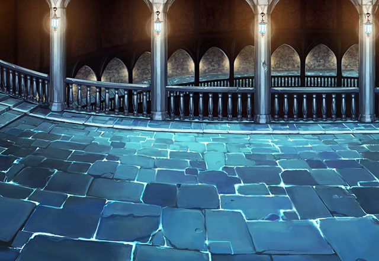

ザーグ
そこにその者がいるということは、 どうやら愚かな選択をしたようだな。
ティリス
Shou-chanたちは 私を信じてくれたんだから！
カル
まあ、そんな感じなんで、 あんたの主にはよろしく言っておいてくれ。
カル
人間を滅ぼそうとした神の手伝いは できないってな。
ザーグ
これ以上、話すのはどうやら 無駄のようだな。
ザーグ
いいだろう。 ならば、ここで滅びるがいい。
ザーグ
我は塔の頂上で貴様たちの命が 消える様を楽しませてもらう。
カル
ああ、どうやらあいつも 俺たちのことはあきらめたみたいだな。
カル
ここに集まってくる敵は 俺たちでまとめて叩く。
カル
ザーグはShou-chanに 任せるとしようぜ。
カル
Shou-chanも女神さんを困らせた あいつに腹を立ててるだろうしな。
ルジーナ
チッ、メンドクセー上に、カルが 仕切ってるのが気に入らねーがまあいい。
ルジーナ
俺様の優しさに感謝して、 きちんと手柄は渡すんだぜ。
パリス
あなたなら大丈夫だと思うけど ザーグには十分注意するのよ。
パリス
あの神徒、口だけでないのは 間違いないから。
カル
女神さんはいざという時のために 力をためておいてくれ。
カル
あいつがこの塔をどうするか わからないからな。
ティリス
何があってもみんなのことは 私が守るから！
カル
お前がザーグを倒すのが先か 俺たちが追い付くのが先か競争だ！